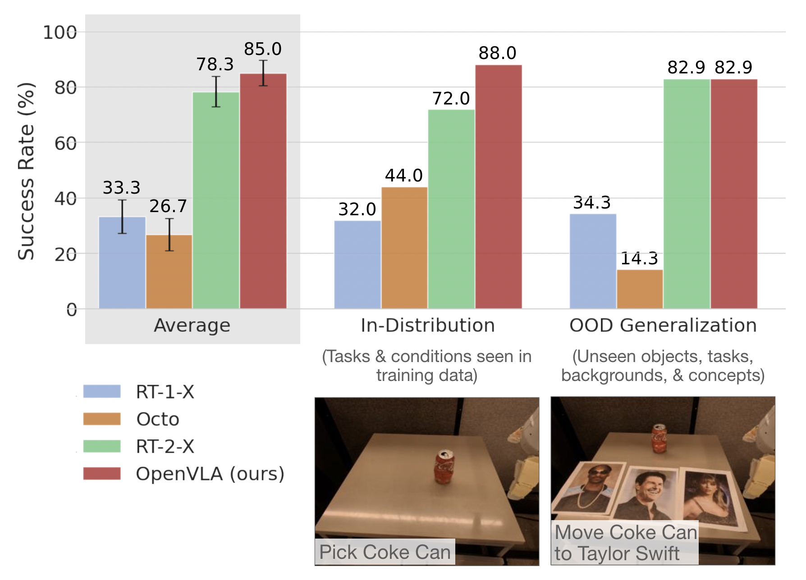

Bridge Put Corn on Plate
Google Place Coke Upright
Franka Pour Corn in Pot (4x)
Franka Wipe Table (4x)
Bridge Put Eggplant in Bowl
Franka Cover Pink Bowl (4x)
Google Move Orange near Coke
Franka Wipe Table (4x)
Bridge Stack Cups (2x)
Franka Flip Pot (4x)
Franka Knock over Yellow Pony (2x)
WidowX & Google robot videos show real "zero-shot" rollouts with the OpenVLA model
Franka Panda robot videos depict fine-tuned OpenVLA policies
We train OpenVLA by fine-tuning a pretrained Prismatic-7B VLM. Our model consists of three key elements: (1) a fused visual encoder, consisting of a SigLIP and a DinoV2 backbone, that maps image inputs to a number of ``image patch embeddings'', (2) a projector that takes the output embeddings of the visual encoder and maps them into the input space of a large language model, and (3) a Llama 2 7B language model backbone that predicts tokenized output actions. These tokens get decoded into continuous output actions that can be directly executed on the robot.
To train OpenVLA, we curate a dataset of 970k robot manipulation trajectories from the Open X-Embodiment (OpenX) dataset. Our dataset spans a wide range of tasks, scenes and robot embodiments. We train OpenVLA on a cluster of 64 A100 GPUs for 15 days. The trained model checkpoints can be downloaded from HuggingFace and used with a few lines of code.
|
We test OpenVLA across a wide range of generalization tasks, such as visual (unseen backgrounds, distractor objects, colors/appearances of objects); motion (unseen object positions/orientations); physical (unseen object sizes/shapes); and semantic (unseen target objects, instructions, and concepts from the Internet) generalization. Qualitatively, we find that both RT-2-X and OpenVLA exhibit markedly more robust behaviors than the other tested model, such as approaching the correct object when distractor objects are present, properly orienting the robot's end-effector to align with the orientation of the target object, and even recovering from mistakes such as insecurely grasping objects |
 |
Below are videos of the OpenVLA generalist policy demonstrating various robust behaviors. (Videos are sped up by 1.5x.)
In a scene with many distractor objects, OpenVLA is able to approach and manipulate the correct target object.
OpenVLA properly orients the robot's end-effector to align with the orientation of the target object before grasping it.
In some cases, after an initial mistake, OpenVLA can even recover and successfully complete the task.
Here we show how OpenVLA compares with other baseline methods in various evaluation tasks. (Videos are sped up by 2x.)
Both RT-2-X (closed-source 55B-parameter model) and OpenVLA perform reliably on in-distribution and basic out-of-distribution (OOD) generalization tasks.
However, RT-2-X performs better than OpenVLA on difficult semantic generalization tasks, i.e., tasks that require knowledge of concepts from the Internet that do not appear in the robot action training data, such as Taylor Swift in the videos below.
This is expected given that RT-2-X uses larger-scale Internet pretraining data and is co-fine-tuned with both robot action data and Internet pretraining data to better preserve the pretraining knowledge (for OpenVLA, we fine-tune the pretrained vision-language model solely on robot action data for simplicity).
In narrow single-instruction fine-tuning tasks, Diffusion Policy trained from scratch outperforms fine-tuned generalist policies, Octo and OpenVLA. (Videos are sped up by 5x.)
However, in fine-tuning tasks that involve multiple objects in the scene and require language conditioning, Octo and OpenVLA generally perform better, as their OpenX pretraining enables them to better adapt to these more diverse tasks.
We see evidence of the benefits of OpenX pretraining when comparing OpenVLA to OpenVLA (Scratch), which ablates OpenX pretraining and directly fine-tunes the base vision-language model on the Franka-Tabletop dataset. The full OpenVLA model exhibits much more reliable behaviors than OpenVLA (Scratch).
@article{kim24openvla,
title={OpenVLA: An Open-Source Vision-Language-Action Model},
author={{Moo Jin} Kim and Karl Pertsch and Siddharth Karamcheti and Ted Xiao and Ashwin Balakrishna and Suraj Nair and Rafael Rafailov and Ethan Foster and Grace Lam and Pannag Sanketi and Quan Vuong and Thomas Kollar and Benjamin Burchfiel and Russ Tedrake and Dorsa Sadigh and Sergey Levine and Percy Liang and Chelsea Finn},
journal = {arXiv preprint},
year={2024},
}